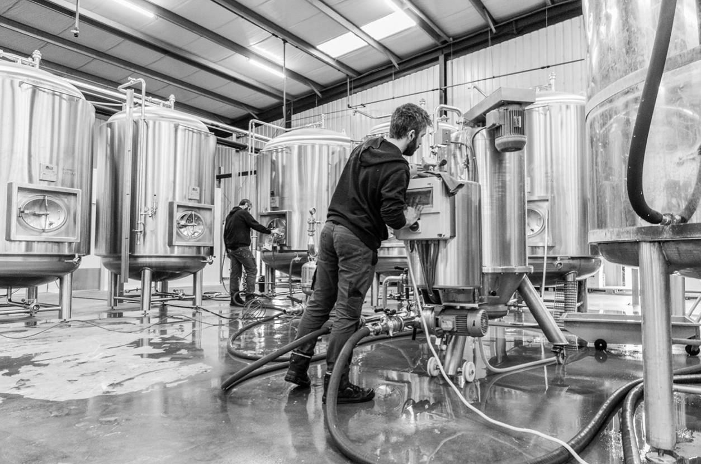

Site officiel de la marque
Site officiel de la marque

Sur la période 2019 à 2022, l’entreprise est passée de 4 à 20 salariés. Une forte croissance salariale au vu des nombreux objectifs que l’entreprise se fixe. Le marché de la bière a fortement évolué depuis les quinze dernières années et cela s’est notamment vu avec une modification du comportement des consommateurs qui souhaitent troquer les bières dites « bon marché » contre des bières artisanales, plus aromatiques avec de vraies valeurs. On les appelle les « Craft Beer ». C’est alors que la brasserie NAO propose des bières étonnantes, innovantes et 100% naturelles. Son cœur de métier est incontestablement la production et la distribution de bières artisanales, principalement en circuit court (environ 90%). La vente en circuit court lui donne la possibilité de garder la main sur l’ensemble des étapes du cycle de vie du produit autour d’un réel savoir-faire, ce qui permet donc de proposer une consommation plus raisonnée et respectueuse pour les consommateurs ainsi qu’une meilleure sélection et connaissance de ses clients. De plus, elle peut contrôler ses prix et proposer une consommation responsable sur le plan environnemental et social
NAO, c’est un SAVANT BRASSAGE : des bières artisanales et naturelles, brassées par une équipe audacieuse et passionnée de longue date, implantée à Vigneux de Bretagne en Loire Atlantique, à mi-chemin entre Nantes et Saint-Nazaire.
Des ingrédients nobles et naturels associés à des petits grains de folie et un savoir-faire artisanal : l’alchimie parfaite pour des bières aux recettes uniques. Sans colorants, sans sucres ajoutés et sans arômes ajoutés.

Des ingrédients nobles et naturels associés aux petits grains de folie de nos savants fous et un savoir faire artisanal exigeant. La gamme NAO est composée de recettes 100% naturelles et élaborées dans nos locaux de Vigneux de Bretagne, « in L. A. ». Sans colorants, sans sucres ajoutés et sans arômes ajoutés.
LE NAO EXPERIMENTAL PROJECT est la carte d’embarquement pour un voyage inattendu dans l’univers des bières originales et innovantes. Tous les ans, notre équipe vous propose 4 recettes étonnantes créées en exclusivité pour les bars. Le NAO Experimental Project vous offre donc un nouveau brassin éphémère par trimestre. C’est notre programme de R&D grandeur nature, alors n’hésitez pas à nous partager votre avis sur les bières de ce projet. Retrouvez ici les bières passées et la bière du moment